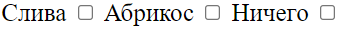
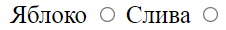
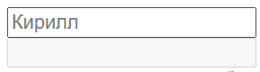
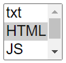
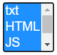

Первый урок
#attribute
# Знакомство с
основным каркасом страницы | Курс HTML & CSS
-
id - Указывает имя стилевого идентификатора.
-
class - Определяет имя класса, которое позволяет связать тег со
стилевым
оформлением.
-
style - Применяется для определения стиля элемента с помощью правил
CSS.
Третий урок
# Ссылки и изображения | Курс HTML & CSS
#attribute/picture
Атрибуты изображения:
Пример: (
< img src="img/640-400.png" alt="JavaScript" title="JavaScript">
)
-
align=" " - Определяет как рисунок будет выравниваться по краю
и способ обтекания текстом.
-
border=" " - Толщина рамки вокруг изображения.
оформлением.
-
height=" " - Высота изображения.
-
hspace=" " -Горизонтальный отступ от изображения до
окружающего контента.
-
ismap=" " - Говорит браузеру, что картинка является серверной
картой-изображением.
-
longdesc=" " - Указывает адрес документа, где содержится
аннотация к картинке..
-
lowsrc=" " - Адрес изображения низкого качества..
-
src=" " - Путь к графическому файлу.
-
vspace=" " - Вертикальный отступ от изображения до
окружающего контента.
-
width=" " - Ширина изображения.
Атрибуты ссылки:
#attribute/link
Пример: (
< a href="" e>
)
-
accesskey=" " Активация ссылки с помощью комбинации
клавиш
-
coords=" " - Устанавливает координаты активной области.
-
href=" "- Задает адрес документа, на который следует
перейти.
-
hreflang=" " - Идентифицирует язык текста по ссылке.
-
name=" " - Отношения между ссылаемым и текущим
документами.
-
rel=" " - Устанавливает имя якоря внутри документа.
-
rev=" " - Отношения между текущим и ссылаемым
документами.
-
shape=" " - Задает форму активной области ссылки для
изображений.
-
tabindex=" " - Определяет последовательность перехода между
ссылками при нажатии на кнопку Tab.
-
target=" " - Имя окна или фрейма, куда браузер будет
загружать документ.
-
title=" " - Добавляет всплывающую подсказку к тексту
ссылки.
-
type=" " - Указывает MIME-тип документа, на который ведёт
ссылка.
Четвертый урок
#attribute/tabble
# Верстаем таблицы | Курс HTML & CSS
-
< td colspan="2">
названия ячейки
< /td>
- Атрибут
< colspan="2">
задает количество присоединенных справа ячеек --->
-
< td rowspan="2">
названия ячейки
< /td>
- Атрибут задает количество присоединенных ячеек снизу.
Пятый урок
# Создание web
формы | Курс HTML & CSS
-
обязательный атрибуты для тега
< form>
:
action="/" - куда будут сохранены данные
method=" "> - выбор метода.
Эти атрибуты отсавляем пустыми для другого програмиста :D
-
обязательный атрибуты для тега
< input>
:
< type=" ">
- тип поля
(text - текст , password - пароль , reset - рестатр , submit - кнопка ( пример отправить), checkbox -
можно
выбрать (квадратной формы ), radio -
можно выбрать (круглой формы )
< name=" ">
- для дальнейшего считования данных с этого поля.
-
не обязательные атрибуты для тега
< input>
:
< maxlenght=" ">
- максимальное количество символов в поле
< value=" ">
- то что будет заполненое в поле.
< placeholder=" ">
- текс поверх которго
можно писать ( примечание в поле )
< disabled=" ">
- блокирует поле ввода 
-
Атрибуты для тега
< textarea>
:
< name=" ">
< cols=" ">
- сколько символов помещается в ряд
< rows=" ">
- количество строк до перемотки
-
Атрибуты для тега
< select>
:
< size=" ">
количество отображаемых блоков 
< multiple=" ">
- можно выбрать несколько элементов 